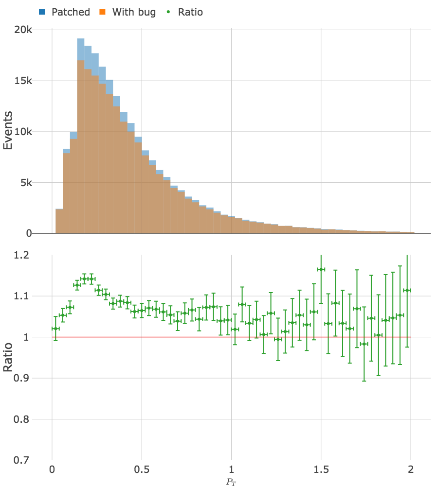
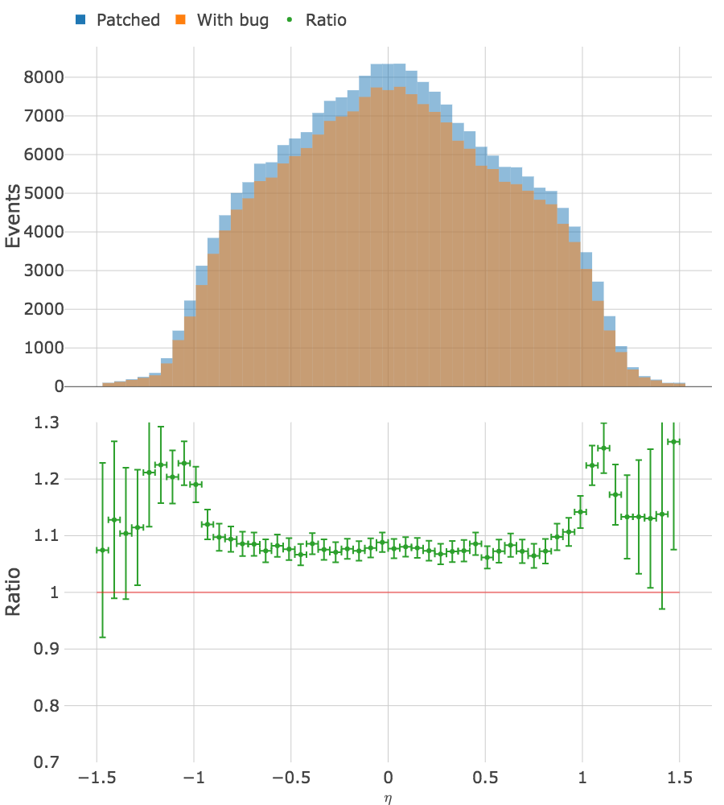
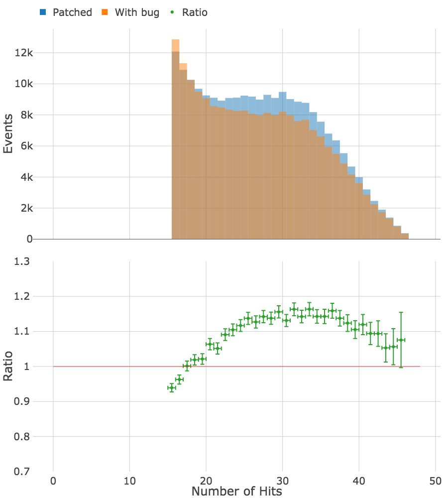
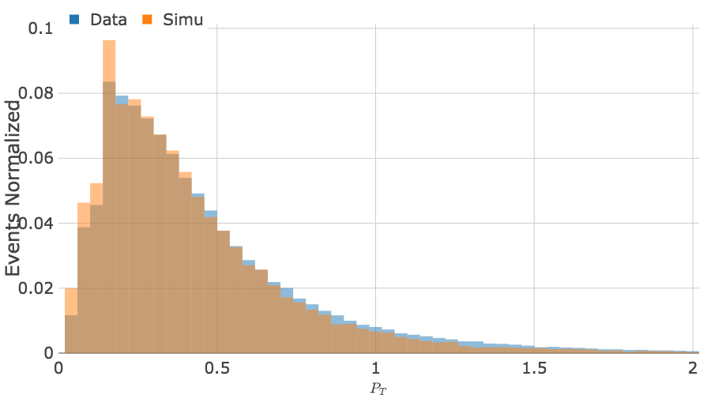
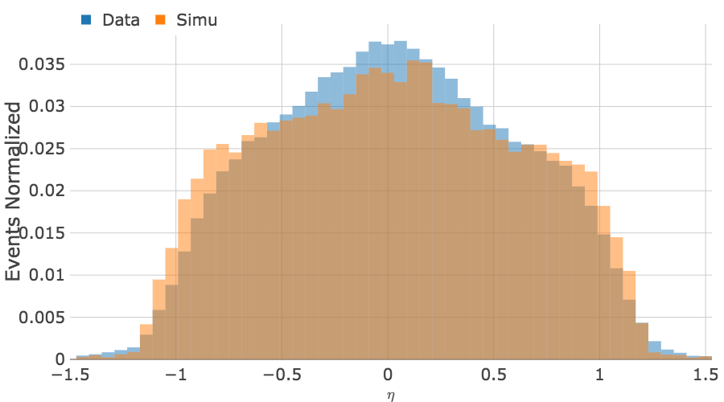
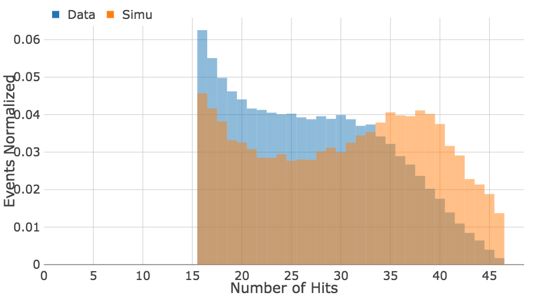
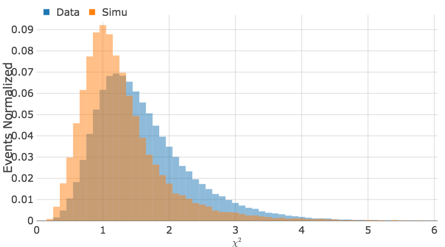

Fixing Issues in Track
Reconstruction and Simulation
J. Lauret, V. Perevozchikov, D. Smirnov, G. Van Buren, J. Webb
STAR Analysis Meeting
December 12, 2018
Recover ~10% of Global Tracks in Run 14 Data
 Recover ~10% of Global Tracks in Run 14 Data

Data vs Simulation
   Details
Real Data Samples and Options
From official production web page:
- SL16d, AuAu 200GeV run 2014 reproduction with HFT tracking (fixed PXL code)
DbV20160418 P2014a pxlHit istHit btof mtd mtdCalib BEmcChkStat -evout CorrX OSpaceZ2 OGridLeak3D -hitfilt
- SL17d, AuAu 200GeV run 2014 st_physics data reproduction with selected
trigger and w/o HFT tracking by request of JetCorr PWG
DbV20150316 DbV20170712_trg_Calibrations FiltTrg_JetCorrTrgs P2014a btof mtd mtdCalib BEmcChkStat CorrX OSpaceZ2 OGridLeak3D -hitfilt
- Test file
/star/rcf/test/daq/2014/086/st_physics_15086051_raw_2500017.daq
Simulation Samples and Options
From official production web page:
- Original set of options from nightly test
fzin tpcRS y2014a AgML pxlFastSim istFastSim usexgeom FieldOn MakeEvent Sti NoSsdIt NoSvtIt StiHftC TpcHitMover TpxClu Idst BAna l0 Tree logger genvtx tpcDB bbcSim btofsim vpdSim mtdSim tags emcY2 EEfs evout geantout -dstout IdTruth big MiniMcMk cl - For the test of "baseline" code remove
cl option